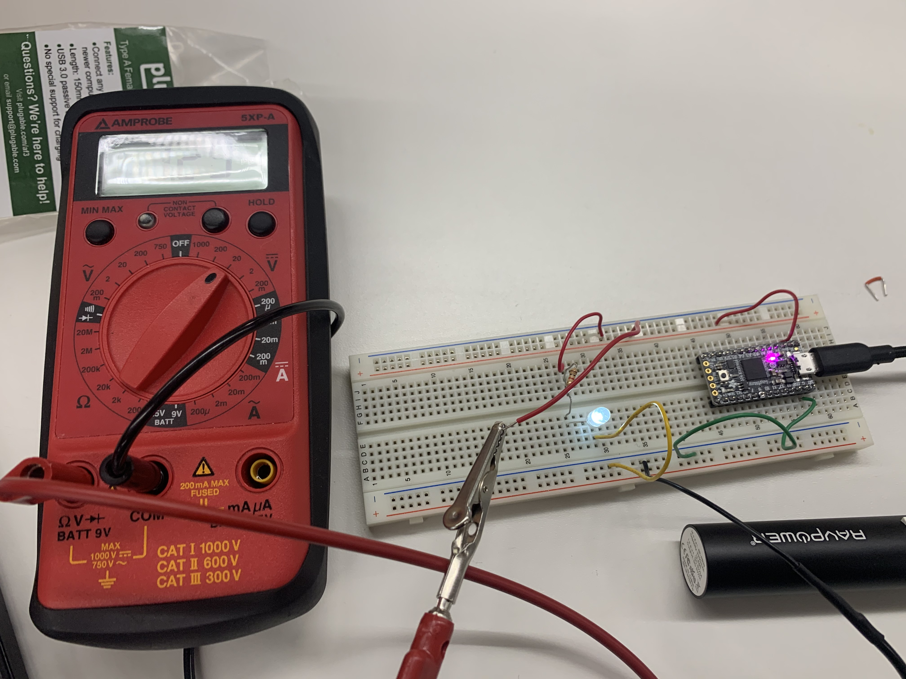

Week 1: Circuit Boards
This week we got to learn how to add components to breadboards. We specifically used a microcontroller, wires, a resistor, and an LED in circuit to get the LED to turn on. We used the 3V output from the microcontroller, but also played with the bat (battery) output, which had less voltage and a dimmer light, and the 5V USB output to get a brigher light. Here is an image of this circuit, with the LED turned on.

We also used a multimeter to measure the voltage drop through the resister (and then used Ohms Law V = I R to calculate the current since we know the resistance). We also measured the voltaged drop through the LED. Here is an image of the multimeter testing the voltage drop in this circuit.
I am still a bit confused about 1) where the voltage drop in the LED came from and how we can calculate this based on current, and 2) how to set up and use arduino software. The code we have used so far makes sense and the output pins are beginning to make sense, but overall I am curious about how to setup more complex codes and also how to power an arduino when not connected to a computer.